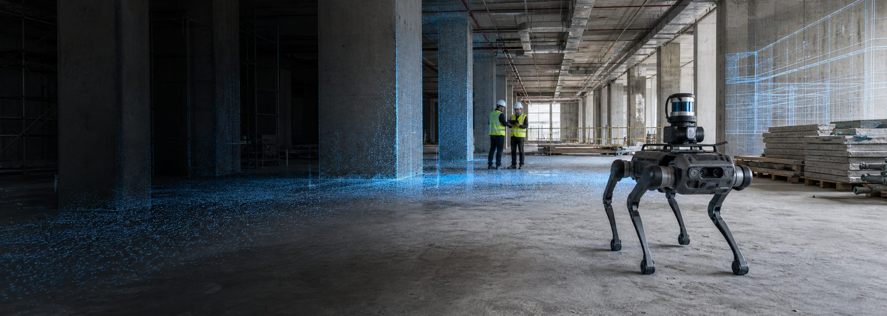

Interaction-centered Building Information Modeling (IC-BIM)
We investigate the structure of BIM processes, treating interaction as the basic unit from which complex BIM processes are formed. Our research aims to establish a formal theory that provides a rigorous basis for representing, analyzing, and explaining how BIM processes are organized and evolve, with the potential to generalize to digital engineering processes more broadly.
Agent-oriented Design and Construction
We investigate how engineering work in the design and construction of buildings and infrastructure should be reconfigured when AI agents become active participants. Our research aims to develop data representations and digital environments that enable AI agents to understand, reason about, and act within these processes.
Robot-Centric Construction (RCC)
We investigate how construction must evolve when robots become agents of physical production. Our research rethinks construction information, planning, coordination, and execution from the perspective of robotic agents, enabling effective robotic construction in dynamic and uncertain environments.